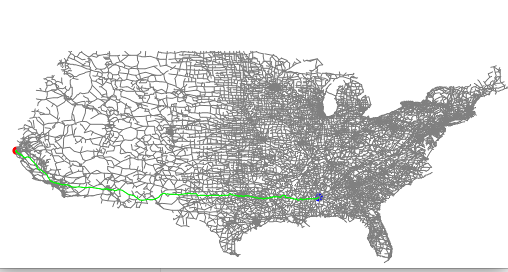

地图路由
题目
目标。优化 Dijkstra 算法,使其可以处理给定图的数千条最短路径查询。 一旦你读取图(并
可选地预处理),你的程序应该在亚线性时间内解决最短路径问题。一种方法是预先计算出
所有顶点对的最短路径;然而,你无法承受存储所有这些信息所需的二次空间。你的目标是
减少每次最短路径计算所涉及的工作量,而不会占用过多的空间。 建议你选择下面的一些
潜在想法来实现,或者你可以开发和实现自己的想法。
想法 1. Dijkstra 算法的朴素实现检查图中的所有 V 个顶点。 减少检查的顶点数量的一种策
略是一旦发现目的地的最短路径就停止搜索。 通过这种方法,可以使每个最短路径查询的
运行时间与 E’ log V’成比例,其中 E’和 V’是 Dijkstra 算法检查的边和顶点数。
想法 2. 你可以利用问题的欧式几何来进一步减少搜索时间,这在算法书的第 4.4 节描述过。
对于一般图,Dijkstra 通过将 d[w]更新为 d[v] + 从 v 到 w 的距离来松弛边 v-w。 对于地图,
则将 d[w]更新为 d[v] + 从 v 到 w 的距离 + 从 w 到 d 的欧式距离 − 从 v 到 d 的欧式距离。
这种方法称之为 A*算法。这种启发式方法会有性能上的影响,但不会影响正确性。
想法 3. 使用更快的优先队列。 在提供的优先队列中有一些优化空间。 你也可以考虑使用
Sedgewick 程序中的多路堆(Multiway heaps, Section 2.4)。
求解
我们将分别完成题述的三个想法，将过程可视化，并比较运行时间。
本文都以起点：6000，终点：1000为例。
最终代码：
想法一
即给定目的地，遇到目的地就停止（early exit）。
输出如下：
running time :358.943s
1000 to 6000
distance: 6637.540854006546可视化如下：

运行过程中，算法从出发点一圈一圈往外探索，直至遇到目的地。
想法二
即给dijkstra加一个启发函数，优先级不止考虑当前点到出发点的距离，也将考虑到目的地的距离。
输出如下：
running time :111.123s
1000 to 6000
distance: 6637.540854006546可视化如下：
可见，A*算法比dijkstra算法更具目的性，直指目的地探索，运行时间不到dijkstra算法的三分之一。
想法三
即更换优先队列，这里我们将索引优先队列更改为索引2-路优先队列。
输出如下：
running time :107.39s
1000 to 6000
distance: 6637.540854006546可视化如下：
可以发现，使用多路优先队列运行时间又减少了一些。
本博客所有文章除特别声明外，均采用 CC BY-SA 4.0 协议 ，转载请注明出处！